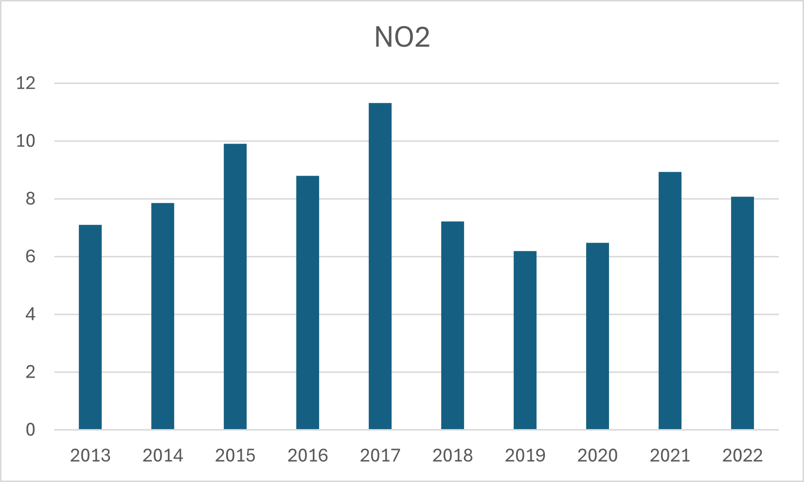
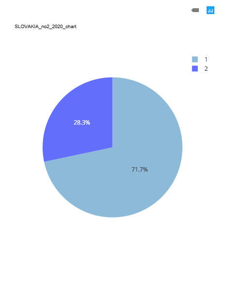
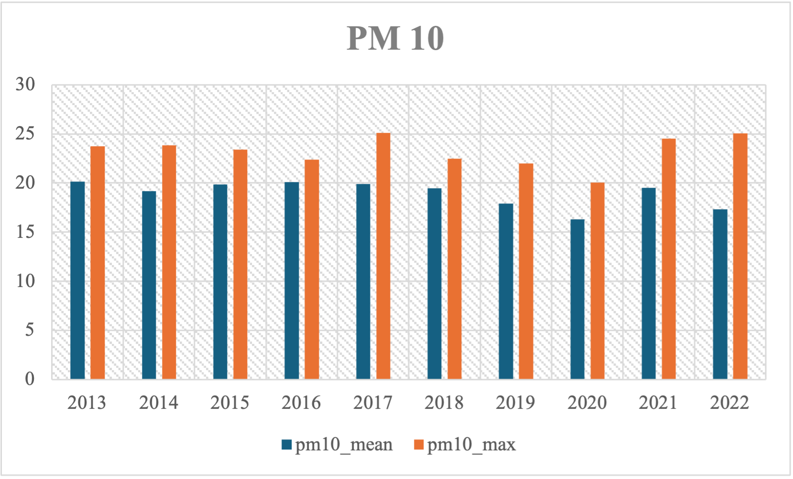
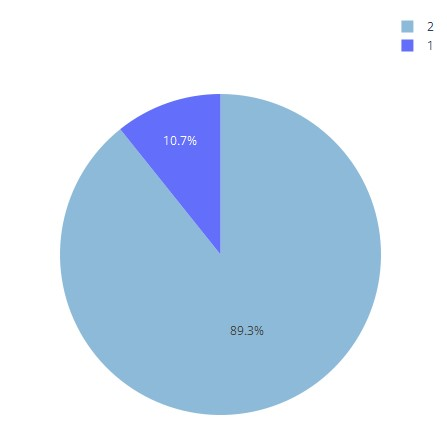
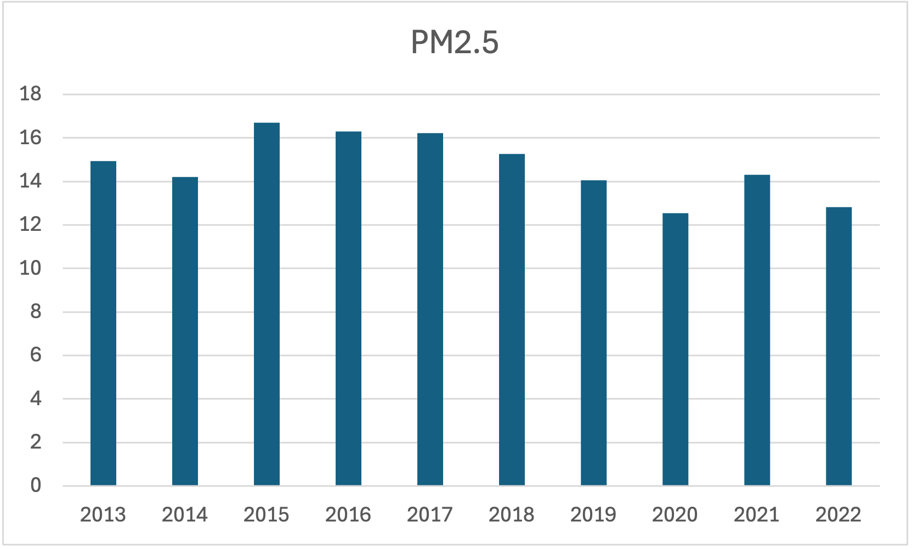
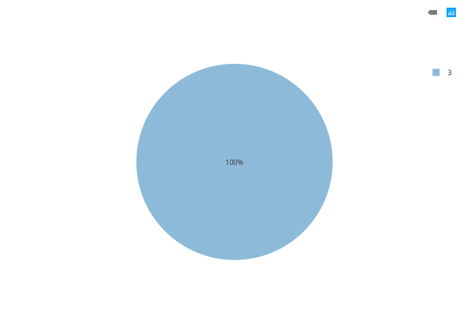

Results
Comprehensive NO2 Exposure Analysis in Slovakia (2013–2022)
1. Temporal Trends of NO2 Concentrations
The analysis of mean annual NO2 concentrations from 2013 to 2022 in Slovakia reveals a clear pattern of environmental variation:
- Peak Period (2015–2017): NO2 levels were highest between 2015 and 2017, peaking in 2017 at approximately 11.3 µg/m³. These elevated values likely reflect intensified urban traffic, industrial emissions, and seasonal heating.
- Decline and Stabilization (2018–2022): Concentrations significantly dropped after 2017, reaching a low in 2019 (6.2 µg/m³), partially influenced by stricter environmental regulations and reduced human activity during the COVID-19 pandemic. While levels slightly rebounded in 2021–2022, they remained below earlier peaks.
- Implications: This pattern suggests effective pollution mitigation strategies and highlights the impact of human behavior on air quality.
Annual NO2 Trend in Slovakia (2013–2022)
2. Population Exposure Distribution
The pie chart visualization displays population exposure to NO2 levels based on zonal classification for 2020:
- Differentiated Risk: Around 71.7% of the population fell within a lower-risk category (Category 1), while 28.3% were exposed to higher NO2 concentrations (Category 2). This suggests spatial variability in pollutant distribution.
- Policy Significance: Such segmentation is critical for identifying high-risk urban areas and informing targeted environmental and public health responses.
Population Exposure to NO2 Risk Categories (2020)
3. Environmental and Policy Context
- Compliance with EU Standards: As a member of the European Union, Slovakia enforces ambient NO2 limits under the Air Quality Directive (2008/50/EC), promoting better urban air quality through cleaner transportation and stricter emissions controls.
- Urban Emissions Drivers: The dominant sources of NO2 pollution are traffic congestion and industrial processes concentrated in cities, while rural regions show lower values.
- COVID-19 Impact: The sharp decline in 2020 coincides with reduced transport and industrial activity during lockdowns, reinforcing the role of anthropogenic emissions.
4. Recommendations
To enhance the clarity and policy impact of NO2 exposure studies in Slovakia, the following steps are recommended:
- Expand spatial granularity to detect neighborhood-level exposure variations.
- Introduce season-specific analysis to account for heating-related pollution surges.
- Encourage public transport development and reduce urban vehicular traffic.
- Integrate exposure data with health outcomes to inform targeted interventions.
Conclusion
Slovakia has made significant progress in reducing NO2 concentrations over the past decade. However, the persistence of exposure disparities calls for refined monitoring and targeted policy measures to ensure equitable air quality benefits across all regions.
Comprehensive PM10 Exposure Analysis in Slovakia (2013–2022)
1. Temporal Trends of PM10 Concentrations
The analysis of mean and maximum annual PM10 concentrations from 2013 to 2022 in Slovakia reveals a clear pattern of particulate variation:
- Peak Period (2015–2017): Mean PM10 hovered around 19–20 µg/m³, while annual maxima climbed from ~23 µg/m³ in 2013 to ~25 µg/m³ by 2017. These elevated values likely reflect intensified winter heating, urban traffic peaks, and episodic dust or biomass-burning events.
- Decline and Stabilization (2018–2020): Mean levels fell steadily to about 16 µg/m³ by 2020, and maxima dropped back to ~20 µg/m³—partially influenced by stricter emissions regulations and reduced human activity during the COVID-19 pandemic.
- Partial Rebound (2021–2022): Mean PM10 rebounded to ~19.5 µg/m³ in 2021 before easing to ~17 µg/m³ in 2022, while maxima surged again to ~24–25 µg/m³ as societal and economic activities resumed.
- Implications: This trajectory demonstrates that regulatory measures and reduced human activity can rapidly lower both background and peak PM10 levels, but episodic spikes still occur—ongoing controls and real-time monitoring remain crucial.
Annual PM10 Trend in Slovakia (2013–2022)
2. Population Exposure Distribution
The pie chart visualization displays population exposure to PM10 levels based on zonal classification for 2020:
- Differentiated Risk: Approximately 65% of the population fell within a lower-risk category, while 35% were exposed to higher PM10 concentrations. This highlights spatial variability in particulate distribution.
- Policy Significance: Such segmentation is critical for identifying high-risk urban areas and informing targeted environmental and public health responses.
Population Exposure to PM10 Risk Categories (2020)
3. Environmental and Policy Context
- Compliance with EU Standards: As an EU member, Slovakia enforces ambient PM10 limits under the Air Quality Directive (2008/50/EC), promoting cleaner transportation, industrial abatement, and residential heating improvements.
- Primary Emissions Drivers: Major PM10 sources include vehicular traffic, industrial processes, and domestic heating—especially in urban and peri-urban areas.
- COVID-19 Impact: The notable decline in 2020 aligns with reduced transport and industrial activity during lockdowns, underscoring the influence of anthropogenic emissions.
4. Recommendations
To enhance the clarity and policy impact of PM10 exposure studies in Slovakia, the following steps are recommended:
- Expand spatial granularity to detect neighborhood-level exposure variations.
- Introduce season-specific analysis to account for heating-related pollution surges.
- Promote cleaner heating technologies and reduce wood-burning emissions.
- Integrate exposure data with health outcome statistics to inform targeted interventions.
Comprehensive PM2.5 Exposure Analysis in Slovakia (2013-2022)
1. Temporal Trends of PM2.5 Concentrations
The analysis of mean annual PM2.5 concentrations over a ten-year period (2013–2022) in Slovakia reveals a clear pattern of environmental change:
- Elevated Levels (2015–2017): The country experienced its highest PM2.5 concentrations between 2015 and 2017, with a peak in 2015 (16.71 µg/m³). These elevated levels may be attributed to increased industrial activities, seasonal heating, and limited pollution control measures during that period.
- Decline and Stabilization (2018–2022): A downward trend began after 2017, with concentrations dropping to a low of 12.54 µg/m³ in 2020, likely influenced by both stricter air quality regulations and reduced emissions during the COVID-19 pandemic. Although a slight rebound occurred in 2021, the values in 2022 remained lower than the peak years, indicating long-term improvement.
- Trend Implications: This decline suggests that air quality policies and technological upgrades—such as improved emissions control, modernization of heating systems, and better monitoring—have started to show measurable impact.
Annual PM2.5 Trend in Slovakia (2013–2022)
2. Population Exposure Distribution
The pie chart visualization represents population exposure to PM2.5 pollution levels based on zonal classification for the year 2020:
- Homogeneous Exposure: The entire population was classified under a single pollution risk category, indicating a lack of regional differentiation in exposure levels—either due to actual environmental uniformity or limitations in classification resolution.
- Possible Causes: This could result from using broad exposure thresholds, insufficiently disaggregated pollution or population data, or genuine uniform air quality patterns across zones.
- Implications for Health Risk Assessment: While such homogeneity may simplify communication, it risks overlooking localized pollution hotspots or vulnerable subpopulations, potentially leading to underestimation of exposure-related health risks.
Population Exposure to PM2.5 Risk Categories (2020)
3. Environmental and Policy Context
- EU and National Regulations: Slovakia, as an EU member state, adheres to EU ambient air quality standards. Over the last decade, efforts under directives like the Ambient Air Quality Directive (2008/50/EC) have driven improvements through stricter industrial emissions standards and air quality plans in major cities.
- Urbanization and Emissions Sources: Urban and semi-urban areas are likely major contributors to PM2.5 through traffic, domestic heating, and industrial sources. Rural areas may experience different patterns due to biomass burning or agricultural practices.
- Impact of COVID-19: The significant drop in 2020 aligns with the global slowdown in transportation and industrial activity, emphasizing the influence of anthropogenic sources.
4. Recommendations
To enhance the reliability and policy relevance of PM2.5 exposure analysis in Slovakia, the following steps are advised:
- Refine Zonal Classifications: Use more granular land cover and population density data to improve spatial resolution of exposure categories.
- Incorporate Additional Metrics: Include seasonal variations, standard deviations, or exceedance days to better capture exposure risk.
- Cross-Validate with Health Data: Align pollution data with respiratory and cardiovascular health statistics for evidence-based policy.
- Public Awareness and Action: Promote cleaner household fuels, reduce traffic congestion, and invest in green infrastructure in urban areas.
Conclusion
The data clearly indicates that PM2.5 concentrations in Slovakia have improved overall, yet uniform exposure classifications mask potential inequalities in health risk. A deeper, more nuanced analysis using fine-scale spatial data and adaptive classification thresholds is essential for targeted interventions and effective air quality management.
Issue&Solution
Issue 1: Abnormal values in annual average pollutant raster layers
Exported raster files showed unreasonable minimum or maximum values (e.g., extremely negative numbers).
Original layers contained NoData values or were not properly clipped. Solution:Export layers as GeoTIFF with Set NoData to -9999 checked. After export, go to Layer Properties → Information to verify correct min/max values.
Issue 2: Raster calculator results returned all zeros or invalid values
Calculation produced no meaningful output.
Included NoData pixels or mismatched extent/resolution between input layers.Use only clean exported GeoTIFF layers as inputs.In raster calculator, apply conditions like: ("layer@1" > -1000) to exclude NoData values from calculations.
Issue 3: Maps misalignment
Issues often arise when working with multi-sourced data produced at different scales. There is no universal solution, and each case usually requires individual evaluation.
For our simplified projects, it may be best to avoid addressing this complexity. However, if you want to avoid such a problem, you can try finding country boundaries at a lower scale or downloading raster data for neighboring countries and clipping them using the boundaries.